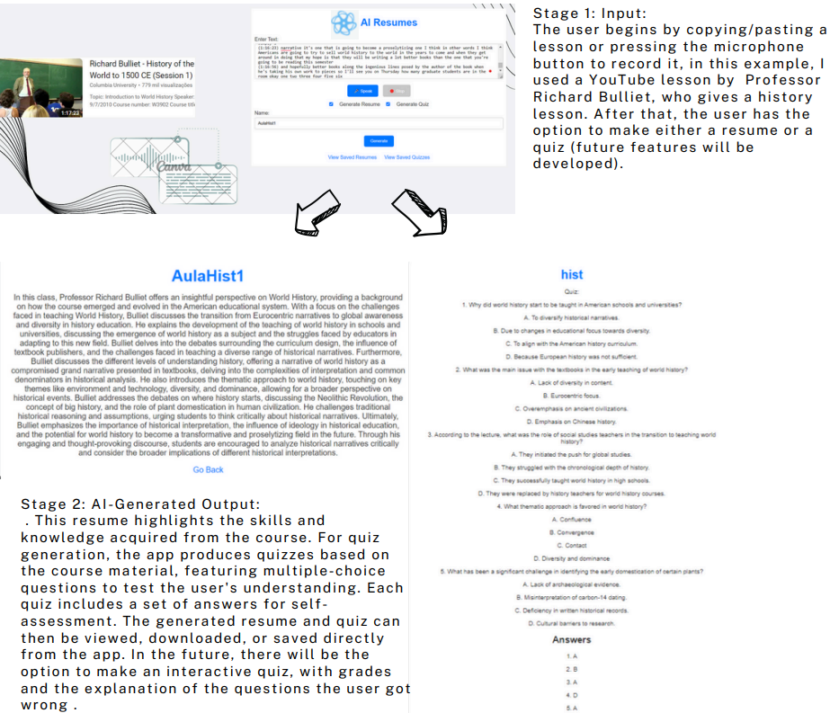

Academic Projects
GymApp
GymApp is a project I developed for a university course. It helps users track their workout routines and progress. Features include personalized workout plans, exercise tracking, and progress visualization.
 View on GitHub
View on GitHub
Course: Capstone Project
Grade: 17/20
AIRESUMES
AIRESUMES is an AI-powered EdTech app designed to help students and teachers by transcribing lectures, generating summaries, and creating quizzes. It simplifies studying and improves learning efficiency.
Key Features:
- 🎙️ Voice-to-Text – Converts lectures into text.
- 📄 Smart Summaries – Generates clear, structured study notes.
- ✅ AI Quizzes – Turns lessons into interactive quizzes.
With AIRESUMES, learning becomes more organized, accessible, and interactive.
View on GitHubCourse: StartUp Venture
Grade: 18/20
Skin Cancer Detection using Deep Learning
This project focuses on creating a deep learning model to classify different types of skin cancer using image data. We utilized Convolutional Neural Networks (CNNs) for image classification.
Key Features:
- 🧠 Deep Learning – Created a CNN model to classify skin cancer types.
- 🔬 Data Preprocessing – Cleaned and prepared the dataset with techniques like image resizing, normalization, and augmentation.
- ⚙️ TensorFlow & Keras – Used for training and tuning the neural network model.
This project demonstrates how deep learning can aid in early skin cancer detection, improving patient outcomes by providing timely diagnoses.
View on GitHubCourse: Deep Learning Course
Grade: 16/20